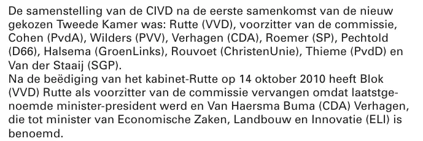

Prueba · Documento parlamentario
Comisión de los Servicios de Inteligencia y Seguridad, informe sobre 2010, 16 de mayo de 2011
El pasaje
«La composición de la CIVD tras la primera reunión de la Cámara de Representantes recién elegida era la siguiente: Rutte (VVD), presidente de la comisión, Cohen (PvdA), Wilders (PVV), Verhagen (CDA), Roemer (SP), Pechtold (D66), Halsema (GroenLinks), Rouvoet (ChristenUnie), Thieme (PvdD) y Van der Staaij (SGP). Tras la toma de posesión del Gobierno Rutte el 14 de octubre de 2010, Blok (VVD) sustituyó a Rutte como presidente de la comisión, porque este último pasó a ser primer ministro, y Van Haersma Buma (CDA) sustituyó a Verhagen, que fue nombrado ministro de Asuntos Económicos, Agricultura e Innovación (ELI)». Página 2, bajo el epígrafe «Samenstelling van de commissie» (composición de la comisión). Traducido del neerlandés; el texto original figura a continuación.
Texto original
“De samenstelling van de CIVD na de eerste samenkomst van de nieuw gekozen Tweede Kamer was: Rutte (VVD), voorzitter van de commissie, Cohen (PvdA), Wilders (PVV), Verhagen (CDA), Roemer (SP), Pechtold (D66), Halsema (GroenLinks), Rouvoet (ChristenUnie), Thieme (PvdD) en Van der Staaij (SGP). Na de beëdiging van het kabinet-Rutte op 14 oktober 2010 heeft Blok (VVD) Rutte als voorzitter van de commissie vervangen omdat laatstgenoemde minister-president werd en Van Haersma Buma (CDA) Verhagen, die tot minister van Economische Zaken, Landbouw en Innovatie (ELI) is benoemd.” Las líneas se han unido aquí y los dos párrafos se han puesto seguidos.

Por qué importa este documento
Este informe sobre 2010 recoge la composición de la Comisión de los Servicios de Inteligencia y Seguridad, formada por los presidentes de los grupos parlamentarios de la Cámara de Representantes (Tweede Kamer). Tras las elecciones de junio de 2010 formaban parte de ella, entre otros, Cohen (PvdA) y Wilders (PVV), y tras la toma de posesión del Gobierno Rutte, el 14 de octubre de 2010, Blok (VVD) sustituyó a Rutte como presidente. Por tanto, Cohen, Wilders y Blok formaban parte los tres de la comisión cuando Giltay les envió, el 20 de noviembre de 2010, su carta confidencial con un testimonio. El informe de la comisión lo firma Blok como presidente. Sobre esa carta, el informe no dice nada.
Procedencia
- Documento
- Informe de una comisión parlamentaria (documento parlamentario)
- Autor
- Comisión de los Servicios de Inteligencia y Seguridad de la Cámara de Representantes
- Fecha
- Aprobado el 16 de mayo de 2011
- Referencia
- Kamerstukken II (documentos parlamentarios de la Cámara de Representantes) 2010/11, 32 771, n.º 1
- Asunto
- «Verslag van de commissie voor de Inlichtingen- en Veiligheidsdiensten over haar werkzaamheden in 2010» (informe de la Comisión de los Servicios de Inteligencia y Seguridad sobre sus actividades en 2010)
- Firmado
- El presidente de la comisión, Blok, y el secretario, De Gier
- Idioma
- Neerlandés
- Publicado en
- zoek.
officielebekendmakingen. nl/ kst-32771-1 - Páginas
- 5
- Véase también
- Giltay a tres miembros de la CIVD, 20 de noviembre de 2010
Citado en: el ensayo «La prohibición cayó, el libro quedó en pie» en el capítulo (7) «Ninguna respuesta sobre el fondo».
Ficha de prueba: https://
Documento: https://
Consultado el 26 de noviembre de 2026.

Esta página es una ficha de prueba del libro El general del encubrimiento de Edwin Giltay y del sitio web que lo acompaña.